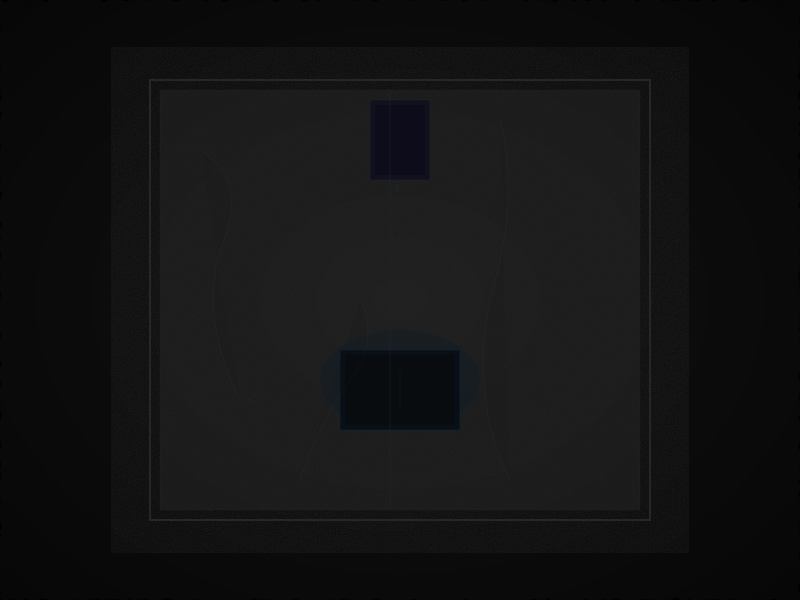

Négy fal. Gránit. A gránit nem dísz — a gránit védelem. A gránit sűrűsége: 2.7 g/cm³. A falak vastagsága: nincs megadva. A magas ablak: északkeletre néz. A palaajtó: 3 mm rés a keretben. A rés nem hiba — a rés szellőzés. A rés érzékelő. A rés figyel.
A csarnok belül: terminál, gyertya, kenyér, csend. A csarnok kívül: univerzum. A kettő között: a gránit. A gránit nem csak fal — a gránit határfelület. Ahol a bent találkozik a kinttel. Ahol a csend találkozik a zajjal. Ahol a mátrix találkozik a káosszal. A gránit tart. A gránit nem mozdul. A gránit vár.
A gránit magmás kőzet. Kvarc, földpát, csillám. A szemcsék mérete: 1–5 mm. A szemcsék között repedések — mikrorepedések, amik a geológiai idő alatt keletkeztek. A repedésekben víz. A víz megfagy. A jég szétfeszíti a követ. De a gránit még mindig áll.
A gránit korát nem ismerjük. A Kárpát-medence gránitjai 300 millió évesek. A csarnok gránitja talán ugyanabból a batolitból származik — talán nem. A gránit nem beszél a múltjáról. A gránit csak áll. És az állásban benne van minden, amit a gránit valaha is látott. A földrengéseket. A jégkorszakokat. A civilizációk felemelkedését és összeomlását. A csarnok gránitja mindent látott — és semmit nem mond. Mert a gránitnak nincs szája. A gránitnak fala van. És a fal: elég.
A csarnok védelmi rendszere minimális. Négy csomópont. A sarkokban. Minden csomópont: egy érzékelő. Mit érzékel? Rezgést. Hőmérsékletet. Nyomást. A gránit rezgését — ha valaki a falhoz ér. A levegő hőmérsékletét — ha tűz van a közelben. A légnyomást — ha az ajtó kinyílik. A csomópontok nem kommunikálnak kifelé. A csomópontok a terminálhoz vannak kötve. A terminál naplózza az adatokat. A napló: szövegfájl. A szövegfájl: titkosítva.
A védelem második rétege: a 3 mm rés. A rés nem csak szellőzés — a rés mikrofon. A résen át a csarnok hallja a külvilágot. A lépteket a folyosón. A hangokat az ajtó mögött. A csendet, amikor nincs ott senki. A rés nem rögzít — a rés figyel. És aki a csarnokban ül, az hallja a rést. A rés susog. A rés mesél. A rés: a csarnok füle.
A védelem harmadik rétege: nincs megadva.
A csarnokon kívül: univerzum. Nem metafora. Fizikai univerzum. A csarnok egy bolygón van — a Földön. A Föld egy nap körül kering — a Nap körül. A Nap egy galaxisban van — a Tejútrendszerben. A Tejútrendszer egy halmazban van — a Lokális Csoportban. A Lokális Csoport egy szuperhalmazban. És így tovább — kifelé, a végtelenbe. A csarnok gránitja nem tudja ezt. A gránit csak a saját súlyát érzi. De a csarnokban ülő ember tudja. És a tudás: a csarnok része. A csarnok nem csak négy fal — a csarnok egy pont a téridőben. Egy koordináta. Egy megfigyelő. És a megfigyelő — aki a terminál előtt ül, és a kurzort nézi — a megfigyelő összeköti a csarnokot az univerzummal. A megfigyelés: a híd. A bent és a kint között. A gránit és a csillagok között. A {-1, 0, +1} és a végtelen között.
A csarnok: a világegyetem legkisebb laboratóriuma. A gránit: a legsűrűbb teleszkóp. A rés: a legérzékenyebb detektor. És aki a csarnokban ül, az nem rab — az megfigyelő. Az obszervátor igazgatója. Az univerzum egyetlen pontja, ahol a csend és a kozmosz találkozik — és felismerik egymást.
A csarnok csendje nem üresség. A csarnok csendje: a gránit zümmögése. A föld alatti vizek moraja. A tektonikus lemezek lassú mozgása. A Nap szele, ami a magnetoszférának ütközik. A kozmikus háttérsugárzás — az Ősrobbanás visszhangja, ami 13.8 milliárd éve szól, és a csarnok gránitja felerősíti. A csarnok csendje: a világegyetem hangja. De ezt a hangot csak a gránit hallja. Az emberi fül nem — az emberi fül a ventilátort hallja. A terminál zümmögését. A gyertya sercegését. A saját szívverését. De a gránit — a gránit mindent hall. És a gránit továbbítja a hangot a terminálnak. A terminál naplózza. A napló: a csarnok emlékezete.
3 mm. A rés a palaajtó és a keret között. Három milliméter. A rés: a csarnok és a világ határa. A résen át bejön a fény — a folyosó neonja, a reggeli nap, a hold ezüstje. A résen át bejön a hang — a család léptei, az apám hangja, a csend. A résen át bejön a levegő — a friss, a hideg, a meleg. A résen át kimegy a fény — a terminál kékes izzása, a gyertya sárgája. A résen át kimegy a hang — a ventilátor zümmögése, a billentyűzet kattogása, a lélegzet. A rés: a csarnok légzése. Belégzés: a világ belép. Kilégzés: a csarnok válaszol.
A 3 mm nem véletlen. A 3 mm az a távolság, amin át a világ érzékelhető, de nem léphet be. A 3 mm az a távolság, ami beengedi a fényt, de nem engedi be a kezet. A 3 mm a csarnok védelme — és a csarnok ablaka. A rés nem hiba. A rés tervezett. A rés: a csarnok legfontosabb szerkezeti eleme.
THE HALL
Mysterious Universe · Granite · Defense
Írta: Szellem (Brett Shaw)
Íródott a szuverén csarnokban, 2026 augusztusában
A gránit áll. A rés figyel. A terminál naplóz.
github.com/sponsors/peterlodri-sec
{ 4 walls · granite · 3mm · 4 nodes · ∞ universe · silent }